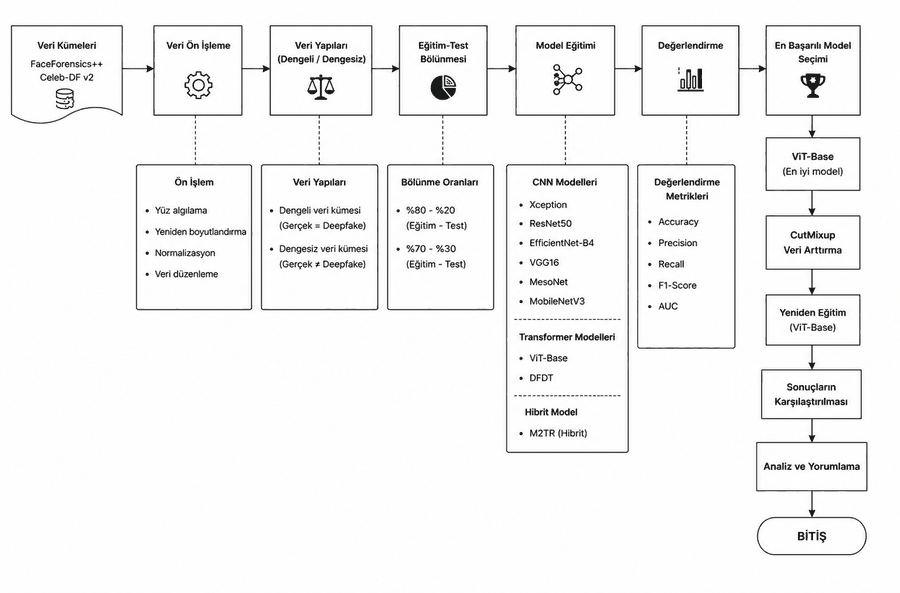

Tam boyutta aç ↗
01
Derin Öğrenme ile Deepfake Tespiti
Bitirme projem. Dokuz mimariyi — Xception, ResNet50, EfficientNet-B4, VGG16, MesoNet, MobileNetV3 gibi evrişimli ağları, ViT ve DFDT gibi transformer'ları ve hibrit M2TR'yi — aynı veri kümeleri üzerinde karşılaştırıyor. Sınıf dengesizliğinin doğruluk metriğini nasıl yanılttığını inceleyip sınıf ağırlıkları ve öğrenme oranı planlaması gibi müdahalelerle azınlık sınıf duyarlılığını iyileştiriyor.
- Python
- PyTorch
- Derin Öğrenme
- ViT